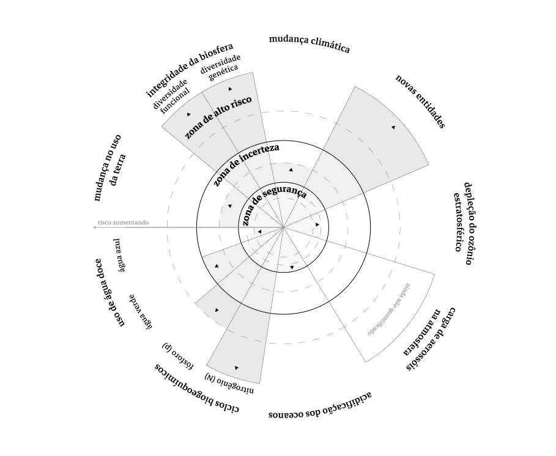

Os impactos provocados pelas ações humanas no sistema-Terra foram suficientes para sairmos do Holoceno, época geológica que se caracterizou pelas condições biogeofísicas relativamente estáveis previsíveis, que, entre outras coisas permitiu o desenvolvimento das sociedades humanas. Em uma tentativa de caracterizar, mapear e quantificar quais são os parâmetros que possibilitam a manutenção na vida da Terra, os cientistas do Stockholm Resilence Center elaboraram a tese dos ‘limites planetários’.
Esses limites definem fronteiras dentro das quais a humanidade pode operar em segurança. “Cruzar esses limites aumenta o risco de gerar mudanças ambientais abruptas ou irreversíveis em larga escala.” (STOCKHOLM RESILIENCE CENTRE, [s.d.]). Os parâmetros e respectivos limites definidos por esse grupo são: (i) integridade da biosfera (diversidade funcional e diversidade genética); (ii) mudanças climáticas; (iii) ciclos biogeoquímicos (ciclo do nitrogênio e ciclo do fósforo); (iv) mudanças no uso da terra; (v) acidificação dos oceanos; (vi) uso da água doce (verde e azul); (vii) depleção do ozônio estratosférico; (viii) carga de aerossóis na atmosfera; (ix) poluição por novas entidades. Cada um desses possui uma variável de controle (STEFFEN et al., 2015).
Esses limites foram definidos com o objetivo de manter uma distância segura de efeitos catastróficos que poderiam colocar a sobrevivência da espécie humana (e muitas outras espécies) em risco, e ultrapassá-los nos coloca em perigosas zonas de incerteza (ROCKSTRÖM et al., 2009). Ainda mais dramaticamente, o grupo responsável pela proposição desses limites também gradua os parâmetros em uma terceira escala, para além da zona de incerteza, nomeada de zona de alto risco.
É importante salientar que esses limites não existem isoladamente, e se influenciam continuamente. É razoável pensar que mudanças no uso da terra influenciam a poluição por novas entidades, ou uso de água doce, por exemplo.
The planetary boundaries framework arises from the scientific evidence that Earth is a single, complex, integrated system—that is, the boundaries operate as an interdependent set. Although a systematic, quantitative analysis of interactions among all of the processes for which boundaries are proposed remains beyond the scope of current modeling and observational capacity, the Earth system clearly operates in well-defined states in which these processes and their interactions can create stabilizing or destabilizing feedbacks.(STEFFEN et al., 2015a)
Um dos fatos alarmantes que esse grupo de pesquisa aponta é que pelo menos cinco desses limites planetários já foram ultrapassados: Mudança no Uso da Terra, Mudanças Climáticas, Perda de Diversidade Funcional, Poluição por Novas entidades e Ciclos biogeoquímicos do Fósforo e do Nitrogênio. Os dois primeiros ainda se encontram dentro de uma zona de incerteza, com menor risco, já os três últimos estão além dessa zona, onde o risco e a incerteza dos impactos aumentam significativamente.
FUTURE EARTH. The Great Acceleration. Disponível em:
RITCHIE, H. There have been five mass extinctions in Earth’s history. Disponível em:
STOCKHOLM RESILIENCE CENTRE. Planetary boundaries - Stockholm Resilience Centre. Disponível em:
ROCKSTRÖM, J. et al. Planetary Boundaries: Exploring the Safe Operating Space for Humanity. Ecology and Society, v. 14, n. 2, 2009.
STEFFEN, W. et al. Planetary boundaries: Guiding human development on a changing planet. Science, v. 347, n. 6223, p. 1259855–1259855, 15 jan. 2015a.
STEFFEN, W. et al. The trajectory of the Anthropocene: The Great Acceleration. The Anthropocene Review, v. 2, n. 1, p. 81–98, 16 jan. 2015b.